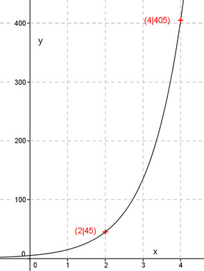

Aufgabe 18 Wie lautet die Funktionsgleichung einer Funktion der Form y = q*ax, wenn sie durch die Punkte (2|45) und (4|405) geht? y = q * ax x1 = 2 , y1 = 45 x2 = 4 , y2 = 405 eingesetzt : 45 = q * a2 (1) 405 = q * a4 (2) Aus (1) : 45 = q * a2 | :a² 45 q = ---- a2 In (2) eingesetzt : 45 405 = ---- * a4 a2 405 = 45 * a2 | :45 a2 = 9 | √ a = ± 3 Eingesetzt in (1) : 45 = q * 9 | :9 q = 5 y = 5 * 3x oder y = 5 * -3x Punktprobe : 45 = 5 * 32 = 5 * 9 = 45 Stimmt. Der Punkt liegt auf diesem Graphen. 45 = 5 * -32 = 5 * -9 = -45 Der Punkt liegt nicht auf diesem Graphen. Einzige Lösung: y = 5 * 3x 